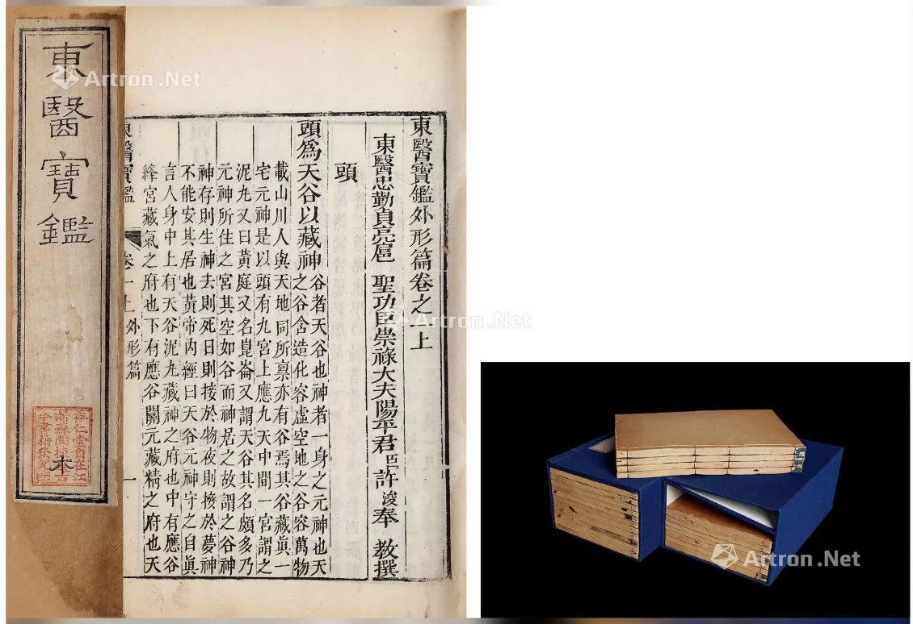

 点击图片可查看大图 · 原始图像 1130×774 px 成交 许浚 等 撰 朝鲜 东医宝鉴二十二卷 许浚 成交记录RMB 20,700 估价RMB 10,000-20,000 记录信息 拍卖日期2018-05-19 09:30 拍卖公司中贸圣佳 拍卖专场2018迎春四季拍卖会 古籍善本 创作年代原表未著录 开本23.6×14.6cm 尺寸类型开本 高 × 宽23.6 × 14.6 cm 纸张原表未著录 成交价原文RMB 20,700 来源位置Excel 第 21 行